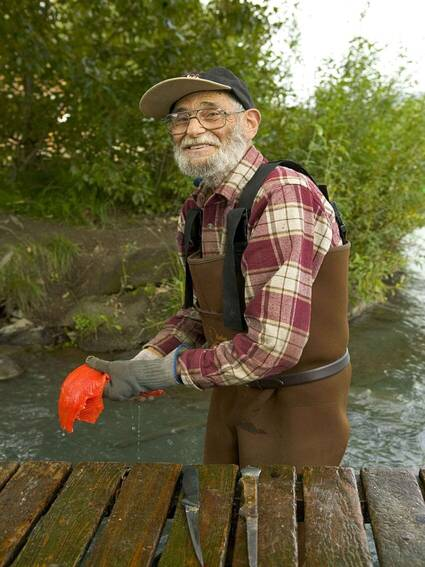

Audience
Target Audience
The target audience for this site is adults who are planning outdoor activites in the Preston, Soda Springs, and Fish Haven areas of Idaho.
Personas
Persona 1
George Smith
George Smith is 77 years old and regularly takes trips to Bear Lake near Fish Have, Id to go fishing. He needs quick weather updates on the Fish Haven area so that he knows when he should go fishing on the weekend. He uses his laptop to veiw his favorite weather site.
Persona 2
Sarah Johnson
Sarah Johnson is 30 years old and lives in Preston, Id. She has one son who plays football. Sarah needs to check the weather before her son's football games so she knows what to wear and what to bring. She uses her smartphone to access her favorite weather site.
Scenarios
Scenario 1
User needs to know what the temperature will be in Fish Haven, Id on Friday
Scenario 2
User needs to know if he/she should wear sunscreen on Saturday in Preston, Id.
Scenario 3
User is planning an outside party on Friday in Soda Springs, Id and needs to know if it is going to rain.
Scenario 4
User needs to know how windy it will be on Wednesday afternoon in Fish Haven, Id to know if he/she will be able to fly a kite.
Scenario 5
User is going swimming at Bear Lake near Fish Haven, Id and needs to know if there will be thunderstorms.